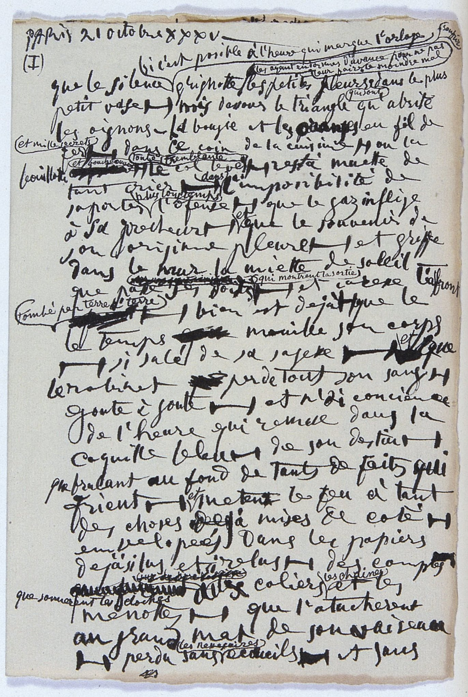
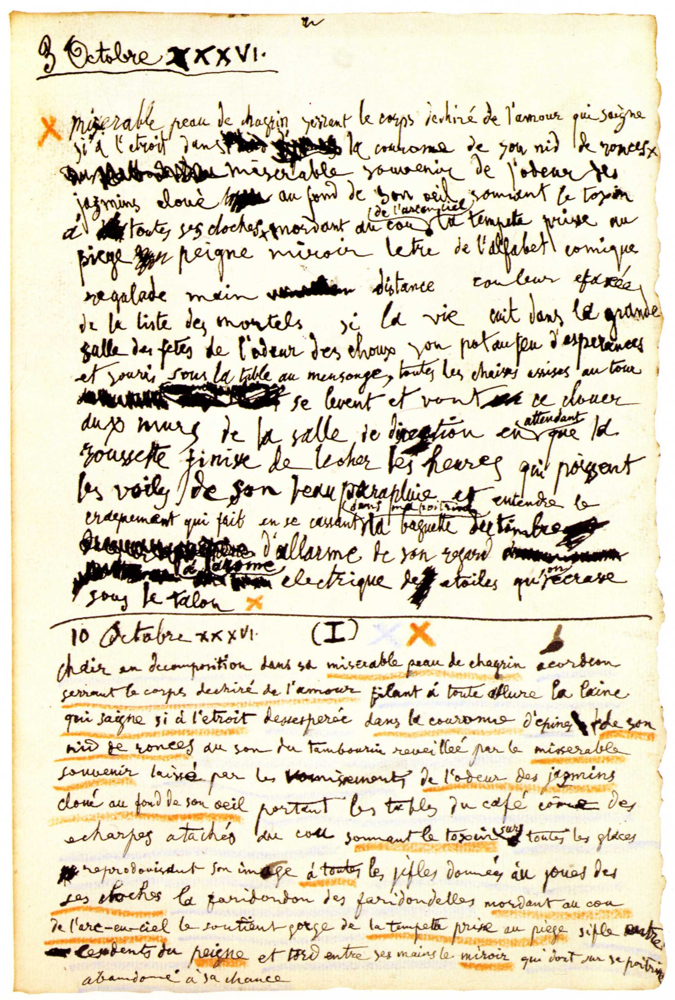

Pablo Picasso started writing in 1935. The onset of this new endeavor is said to have coincided with a devastating marital crisis—a financially risky divorce to be exact—decreasing substantially his pictorial output. Writing now became his alternative outlet. Not surprisingly, Picasso’s poetry is quite visual. While other poets in the past have added graphic elements to enhance their poems, their use in Picasso is of special importance as they are an essential component of his writing. Furthermore, the method he used in his poetic compositions is essentially combinatorial in nature, with words co-occurring often in unexpected ways, this relates to his collage technique during Cubism. Examples of these features are shown in figures 1 and 2.
Figure 1: P. Picasso, OPP35-138, 1935
Figure 2: P. Picasso, OPP36-138, 1936.
Among the graphic elements Picasso includes in his poems are dashes, brackets, arrows, lines, blots, etc. The combinatorial nature of his writing highlights the interconnections between words and graphic elements (Mallen 2003). This combination of unique graphic and verbal components in Picasso’s poetry leads us to view the poems as a set distinct layers of text and images that form the layout of a document—making it quite hard to define different boundaries while providing an important contribution to the interpretation of the layers of text. Additionally, Picasso's poems are often revisited multiple times, and he kept a record of all the changes from one state to another at various moments of their creation. Each layer with new additions and deletions is carefully dated by the author, indicating the importance that each of them had for him. The “final” published copy is artificial in the sense that the printed version has been subjected to a frozen linearized transcription (often carried out by Picasso’s secretary, Jaime Sabartés) and fails to portray the information in the additional layers that can be found in the original manuscripts which fortunately have been preserved.
We previously concluded that there is a close correlation between graphic elements and the verbal context in which they occur (Meneses and Mallen 2017) and offered a solution to encode graphic features and stratified text in machine-readable form (Mallen and Meneses 2019). However, identifying and encoding the graphical elements in the corpus of poems can be a laborious and intensive process. In this paper we will present a new approach that uses OpenCV, a library of programming functions aimed at real-time computer vision (OpenCV 2019), to identify the graphic elements in Picasso’s poetry. More specifically, we will present our findings on training the models, and discerning between false positives and negatives. This analysis will get us closer to understanding how the presence of graphic elements in a specific line of a poem affects the interpretation of the word string in that line and of the poem as a whole. Our final goal is to provide a systematic encoding of both the text and the graphic elements so that their mutually dependent interpretation may be properly evaluated.
References
Mallen, Enrique. 2003. The Visual Grammar of Pablo Picasso. New York: Peter Lang.
Mallen, Enrique, and Luis Meneses. 2019. “Visual Text: Encoding Challenges in Picasso’s Poetry.” Journal of Fine Arts 2 (2): 31–37.
Meneses, Luis, and Enrique Mallen. 2017. “Visual Text: Encoding Challenges in Picasso’s Poetry.” presented at the TEI 2017, Victoria, BC, Canada, November 11.
OpenCV. 2019. “OpenCV.” Accessed October 11. https://opencv.org/.